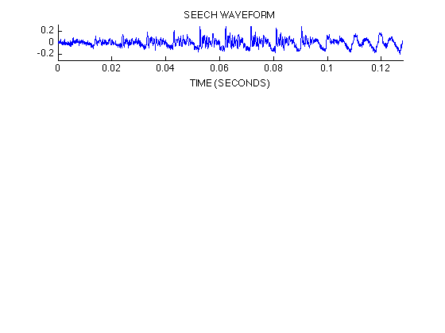
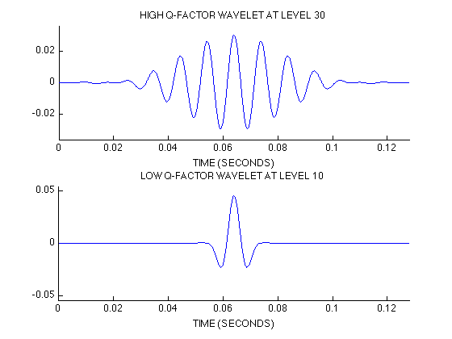
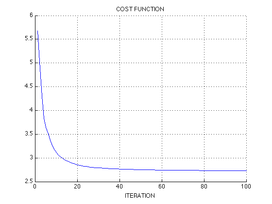
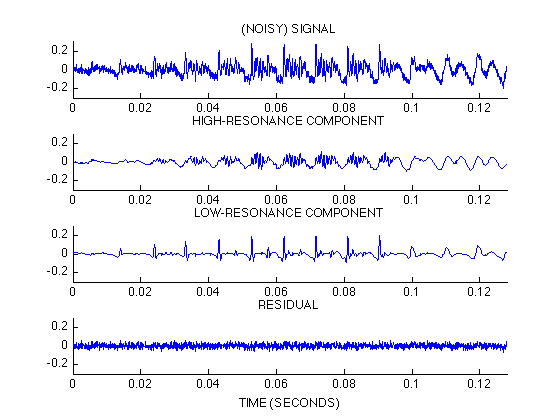

resonance_demo: Resonance-based signal decomposition
Example illustrating the decomposition of a test signal into a high-resonance component and a low-resonance component (into an oscillatory component and a transient component).
This version is based on approximation approximation: x ~ x1 + x2
Reference: Resonance-Based Signal Decomposition: A New Sparsity-Enabled Signal Analysis Method. Signal Processing, 2010, doi:10.1016/j.sigpro.2010.10.018 I. W. Selesnick.
Contents
Miscellaneous
% close all
clear
Set example parameters
% Uncomment one of the following two lines % Example_Num = 1; % Artificial signal Example_Num = 2; % Speech waveform switch Example_Num case 1 % Artifical signal % High Q-factor wavelet transform parameters Q1 = 3; r1 = 3; J1 = 19; % Low Q-factor wavelet transform parameters Q2 = 1; r2 = 3; J2 = 9; % Set MCA parameters Nit = 100; % Number of iterations A1 = 0.35; % lam1, lam2: regularization parameters A2 = 0.40; mu = 0.1; % SALSA parameter % Make test signal N = 2^9; % N = 512; % length of signal x is power of 2 x1 = test_signal(5); % High-resonance signal x2 = test_signal(1); % Low-resonance signal x = x1 + x2; % Test signal (sum of high and low resonances) x = x + 0.1 * randn(1,N); t = (0:N-1); % time axis fs = 1; xlabel_txt = 'TIME (SAMPLES)'; A = 2; % y-axis extent for plots % Function for printing a figure to a file printme = @(str) print('-dpdf',sprintf('figures/resonance_demo_noisy_1_%s',str)); % Display signals figure(1), clf subplot(4,1,1) plot(t,x) title('(NOISY) TEST SIGNAL') box off ylim([-A A]) xlim([0 N]) xlabel(xlabel_txt) case 2 % Speech signal x = load('speech1.txt'); fs = 16000; x = x(:)'; N = 2^11; % length(x) t = (0:N-1)/fs; % time axis x = x + 0.02 * randn(1,N); % add noise xlabel_txt = 'TIME (SECONDS)'; A = 0.3; % High Q-factor wavelet transform parameters Q1 = 4; r1 = 3; J1 = 30; % Low Q-factor wavelet transform parameters Q2 = 1; r2 = 3; J2 = 10; % Set MCA parameters Nit = 100; % Number of iterations A1 = 0.1; % lam1, lam2: regularization parameters A2 = 0.1; mu = 0.5; % SALSA parameter % Function for printing a figure to a file printme = @(str) print('-dpdf',sprintf('figures/resonance_demo_noisy_2_%s',str)); % Display signal figure(1), clf subplot(4,1,1) plot(t,x) title('SEECH WAVEFORM') box off ylim([-A A]) xlim([0 N/fs]) xlabel(xlabel_txt) orient landscape printme('Speech_Waveform') end
Verify perfect reconstruction
Check that transforms with selected parameters satisfy perfect reconstruction. (It is not really needed; just to double check.)
w1 = tqwt_radix2(x, Q1, r1, J1); y = itqwt_radix2(w1, Q1, r1, N); fprintf('Transform 1 reconstruction error = %4.3e\n', max(abs(y-x))) w2 = tqwt_radix2(x, Q2, r2, J2); y = itqwt_radix2(w2, Q2, r2, N); fprintf('Transform 2 reconstruction error = %4.3e\n', max(abs(y-x)))
Transform 1 reconstruction error = 1.318e-16 Transform 2 reconstruction error = 1.388e-16
Plot wavelets at final levels
% Compute wavelets wlets1 = ComputeWavelets(N,Q1,r1,J1,'radix2'); wlets2 = ComputeWavelets(N,Q2,r2,J2,'radix2'); figure(2), clf subplot(2,1,1) plot(t, wlets1{J1}) title(sprintf('HIGH Q-FACTOR WAVELET AT LEVEL %d',J1)) xlim([0 N/fs]) ylim(1.2*(max(abs(wlets1{J1})))*[-1 1]) box off xlabel(xlabel_txt) subplot(2,1,2) plot(t, wlets2{J2}) title(sprintf('LOW Q-FACTOR WAVELET AT LEVEL %d',J2)) xlim([0 N/fs]) ylim(1.2*(max(abs(wlets2{J2})))*[-1 1]) box off xlabel(xlabel_txt) printme('Wavelets')
Peform MCA (decomposition)
now1 = ComputeNow(N,Q1,r1,J1,'radix2'); now2 = ComputeNow(N,Q2,r2,J2,'radix2'); lam1 = A1*now1; lam2 = A2*now2; % [y1,y2,w1s,w2s,costfn] = dualQd(x,Q1,r1,J1,Q2,r2,J2,lam1,lam2,mu,Nit,'plots'); [y1,y2,w1s,w2s,costfn] = dualQd(x,Q1,r1,J1,Q2,r2,J2,lam1,lam2,mu,Nit); % [y1,y2,w1s,w2s] = dualQd(x,Q1,r1,J1,Q2,r2,J2,lam1,lam2,mu,Nit); res = x - y1 - y2; % residual rel_res = sqrt(mean(res.^2))/sqrt(mean(x.^2)); fprintf('relative RMS reconstruction error = %4.3e\n',rel_res); % check % max(abs(y1-itqwt_radix2(w1s,Q1,r1,N))) % should be zero % max(abs(y2-itqwt_radix2(w2s,Q2,r2,N))) % should be zero
relative RMS reconstruction error = 3.042e-01
Compute cost function
cost = sum(abs(x - y1 - y2).^2); for j = 1:J1+1 cost = cost + lam1(j)*sum(abs(w1s{j})); end for j = 1:J2+1 cost = cost + lam2(j)*sum(abs(w2s{j})); end fprintf('Objective function: %e\n', cost); % check consistency between 'cost' and final value of 'costfn' cost_err = costfn(end) - cost; fprintf('Cost function calculation error: %d\n', cost_err)
Objective function: 2.730081e+00 Cost function calculation error: 0
Display cost function versus iteration
The decomposition is based on minimizing a cost function by an iterative optimization algorithm (dualQd). It can be useful to inspect the value of the cost function versus the iteration number to see if the algorithm has converged satisfactorily.
figure(3) clf plot(1:Nit, costfn) xlabel('ITERATION') xlim([0 Nit]) title('COST FUNCTION') grid box off printme('Cost_Function')
Display component signals
The high Q-factor (high-resonance) and low Q-factor (low-resonance) components obtained by minimizing the cost function.
figure(4) clf subplot(4,1,1) plot(t,x) axis([0 N/fs -A A]) title('(NOISY) SIGNAL') box off subplot(4,1,2) plot(t,y1) axis([0 N/fs -A A]) title('HIGH-RESONANCE COMPONENT') box off subplot(4,1,3) plot(t,y2) axis([0 N/fs -A A]) title('LOW-RESONANCE COMPONENT') box off subplot(4,1,4) plot(t, res) axis([0 N/fs -A A]) title('RESIDUAL') box off xlabel(xlabel_txt) orient tall if Example_Num == 2 orient landscape end printme('Components')
Print Information
file_name = sprintf('figures/resonance_demo_noisy_%d_info.txt',Example_Num); fid = fopen(file_name,'w'); fprintf(fid,'TRANSFORM TYPE: tqwt_radix2\n'); fprintf(fid,' TQWT 1: Q = %4.2f, r = %4.2f, levels = %d\n',Q1,r1,J1); fprintf(fid,' TQWT 2: Q = %4.2f, r = %4.2f, levels = %d\n\n',Q2,r2,J2); fprintf(fid,'SALSA PARAMETERS: \n'); % fprintf(fid,' lambda1 = %.3e \n lambda2 = %.3e \n mu = %.3e\n', lam1, lam2, mu); fprintf(fid,' mu = %.3e\n', mu); fprintf(fid,' iterations = %d\n',Nit); fclose(fid);